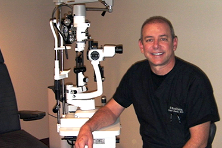
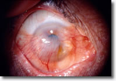

Ophthalmology
 As an ophthalmologist certified by the American Board of Ophthalmology and Fellow of the American Academy of Ophthalmology, Dr. Tomy Starck not only offers the top services in laser vision correction but also offers other ophthalmology services such as routine and comprehensive eye exams as well as cataract surgery and corneal transplants.
- Cataract
- Pterygium
- Cornea Transplant
- Dry Eye
CATARACT SURGERY
Over half of people over the age of 60 (and many younger than that) suffer from cataracts. Almost everyone develops cataracts as they grow older. Cataract formations occur at different rates and can affect one or both eyes.
A cataract is a clouding of the eye's natural lens, which lies behind the iris and the pupil.It infers with light passing through the eye to the retina. Aging and other factors cause proteins in the eye's lens to clump together forming these cloudy areas. Early changes may not disturb vision, but over time cataracts typically result in blurred or fuzzy vision and sensitivity to light. People with progressed cataracts often say they feel as if they're looking through a foggy windshield or a piece of wax paper. Surgery needs to be performed when the cataracts have progressed enough to seriously impair the vision and affect the daily life..
Surgery is usually performed on an outpatient basis. A local anesthetic will make the operation painless. Next, under a microscope, a small incision is made into the eye. Microsurgical instruments are used to fragment and suction the cloudy lens from the eye. An acrylic intraocular lens implant is then inserted into the eye to replace the natural lens that was removed. The incision is then closed. When stitches are used, they rarely require removal. Over 95% of cataract surgeries improve vision..
Symptoms of cataracts:
- Decreasing vision with age
- Blurred or double vision
- Seeing halos around bright lights
- Difficulty seeing at night
- Vision that worsens in sunlight
- Difficulty distinguishing colors
- Poor depth perception
- Frequent prescription changes for glasses
- Difficulty reading
ADVANCES IN LENS REPLACEMENT EYE SURGERY
During the initial cataract surgery procedures the natural lens that had been removed wasn't replaced with an artificial one, so after the surgery it was necessary to wear very thick eyeglasses or special contact lenses in order to see. Since the mid-1960s the lens has been replaced with an Intraocular Lens (IOL) that is surgically implanted in the eye. The lens used for these replacements has been for years a monofocallens meaning they offer vision at one distance only (far, intermediate or near). But with the use of traditional or standard IOLs you must wear eyeglasses or contact lenses in order to read, use a computer or view objects in the middle distance. There are new "bifocal" implants, that allow each eye to see well at near, far, and everything in between so most people will never need glasses again.
One of the options available is theAcrysoft® ReStor multifocal lens, which can improve vision in a full range of distances from far to near.
The AcrysoftReStor lens is a breakthrough lens that lets patients see from far too near usually without glasses. An innovative optical technology called "apodization" makes the AcrysofRestor lens uniquely effective, especially when placed in both eyes. A similar technology has been used for years in microscopes and telescopes to improve image quality and has now been patented for use in intraocular lenses by Alcon®. Ninety four percent of patients that have these lenses said they would have the lenses implanted again and four out of five recipients reported never wearing glasses after having the lens placed in both eyes.
Most people wanting to get rid of bifocals (with or without cataract) is a candidate for this multifocal IOL's or any patient with an otherwise normal eye exam who needs cataract surgery and wants less dependence on glasses.
Another one of the IOL lenses available is called the Acrysoft® Toric. This lens is used for the treatment of astigmatism. Corneal astigmatism is a common irregularity in which the surface of the cornea is curved more like a football, with both flatter and steeper curves. When the surface of the cornea has an uneven curvature, vision becomes distorted because the light rays are not focused at one spot to provide clear vision. If freedom from eyeglasses for distance vision is important to a patient this would be an option to consider. The lens is made of a biocompatible lens material already implanted in more than 25 million eyes since 1991. A person who has both a cataract and a corneal astigmatism will not regain high-quality distance vision after cataract surgery unless the astigmatism is also corrected.
For those patients who have early stages of cataracts that have not reached the “mature level: can opt to have a replacement lens exchange (RLE). Your eye's natural lens is replaced with an IOL (intraocular lens) to achieve sharper focus. This procedure is done mainly on people who are middle-aged or older that may or may not have the beginnings of cataracts.. Artificial (intraocular) lenses likely can provide significantly better uncorrected vision at that point, especially if you now require vision correction with glasses or contact lenses for near.
PTERYGIUM EYE DIAGNOSIS AND TREATMENT
A Pterygium is a triangular fold of benign growth of tissue on the white of the eye (sclera) that can eventually grow over part of the cornea. It is associated with, and thought to be caused by ultraviolet-light exposure (e.g. sunlight), low humidity, and dust. Additionally, pterygia are twice as likely to occur in men as women. It is a wide spread problem in our area due to the continuous and strong exposure to UV light. The more time the person spends in outdoor activities the higher the chance of developing the disease.
Some people have no symptoms while others may experience persistent redness, inflammation, foreign body sensation, dry and itchy eyes. Pterygia that are chronically inflamed can become itchy. In advanced cases the pterygium can affect vision as it invades the cornea with the potential of induced astigmatism and corneal scarring. Because a pterygium resembles tissue or film growing over the eye, a person who has one may become concerned about personal appearance. Additionally a pterygium that stays over the cornea for an extended period of time starts to leak lipids inside the cornea creating white spots that also affect the eye appearance.

Figure 1. Pterygium before surgery
Treatment depends on the pterygium's size and the symptoms it causes. If a pterygium is small but becomes inflamed, I would prescribe lubricants or possibly a mild steroid eye drop to reduce swelling and redness. In more severe or chronic cases it may be necessary to remove it surgically.
The surgical procedure involves a topical anesthetic with sedation that will be used before surgery to deaden feeling in your eye's surface. Your eyelids will be kept open with an eyelid speculum while the pterygium is surgically removed. Dr. Starck uses the conjunctival auto-grafting surgical technique. This is an effective and safe procedure for pterygium removal. When the pterygium is removed the tissue that covers the sclera known as the conjunctiva is also extracted. The autograph replaces the bare sclera with tissue that is surgically removed from the inside of the patients' upper eyelid. That "self-tissue" is fixated using tissue adhesive instead of sutures for a faster and more painless recovery. The "human" glue used during the surgery is derived from blood coagulation products including fibrinogen which is converted to fibrin when in contact with the patient's blood thrombin. The characteristics of fibrin make it "glue" tissues temporarily up to forty eight hours after which is reabsorbed without a trace. Cosmetically after the procedure is difficult to elicit any previous surgery and the eye looks calm and white without irritation.
After the procedure, which usually lasts no longer than half an hour, you likely will need to wear an eye patch for protection for a day. You should be able to return to work or normal activities the next day.
A drug that slows metabolic processes (antimetabolite) contributing to tissue growth, such as mitomycin, may be applied topically in selected cases.
The risk of recurrence varies depending on the surgical approach. To prevent re-growth after the pterygium is surgically removed, Dr. Starck uses a technique where he glues a graft of the patient's own tissue onto the affected area. This graft fills the space where the abnormal tissue would have re-grown thus having a low recurrence rate < 5 % instead of the original one up to 50 %
After removal of the pterygium, steroid eye drops may be used for several weeks to decrease swelling and prevent regrowth.
Since pterygium development is associated with excessive sun or wind exposure, wearing protective sunglasses with side shields and/or wide brimmed hats and using artificial tears throughout the day may help prevent their formation or stop further growth. Surfers and other water-sport athletes should wear eye protection that block 100% of the UV rays from the water, as is often used by snow-sport athletes.
CORNEA TRANSPLANTS
In a cornea transplant a graft replaces the central corneal tissue, damaged due to disease or eye injury, with healthy corneal tissue donated from a local eye bank. An unhealthy cornea affects your vision by scattering or distorting light and causing glare and blurred vision. A cornea transplant may be necessary to restore your functional vision. Some of the events that may cause a cornea transplant are:
Cornea transplants are performed routinely. In fact, of all tissue transplants, the most successful is a corneal transplant. More than 40,000 cornea transplants are performed just in the United States each year, according to the Eye Bank Association of America 2008 Statistical Report.
To start the cornea transplant the patient's name is placed on a list at a local eye bank. The waiting period for a donor eye is generally one to two weeks due to a very sophisticated eye bank system in the United States. Before donor corneas are released for transplant, the tissue is checked for clarity, quality and screened for presence of diseases such as hepatitis and AIDS or other damage to ensure the health and safety of the recipient. Typically, corneal transplants are performed on an outpatient basis and local anesthesia. A round, button-shaped section of tissue is then removed from your diseased or injured cornea. A nearly identical-shaped button from the donor tissue is then sutured into place. Finally, the surgeon will place a plastic shield over your eye to protect it from being inadvertently rubbed or bumped. The surgery takes approximately one hour.
Most corneal transplants are successful. Nevertheless, recognizing the warning signs of problems is the best way to prevent corneal transplant rejection. The patient should familiarize himself/herself with the four main signs by remembering the acronym RSVP: Redness, Extreme sensitivity to light, Decreased vision, Pain
Recovering From a Cornea Transplant
The total recovery time for a corneal transplant can be up to a year or longer. Initially, the vision will be blurry and the site of the corneal transplant may be swollen and slightly thicker than the rest of your cornea. As the vision improves, the patient will gradually be able to return to normal daily activities.
Stitches usually are removed three to 17 months post-surgery, depending on the health of the eye and the rate of healing. Adjustments can be made to the sutures surrounding the new cornea to help reduce the amount of astigmatism resulting from an irregular eye surface.
DSEK Procedure
There is a new version of corneal transplant, known as Descemet's Stripping Endothelial Keratoplasty (DSEK), in this new surgical method only a very thin portion of the cornea is used for the transplant.
The American Academy of Ophthalmology (AAO) in 2009 endorsed DSEK as superior to the more conventional full-thickness corneal transplant procedure (penetrating keratoplasty) for better vision outcomes and stability, as well as fewer risk factors. Since the patient keeps part of his cornea the risk of rejection is much lower than with the regular procedure. Almost no sutures are required so the recovery is much faster without inducing as much astigmatism and with better vision in a very short period of time.
The DSEK technique can be performed alone or in combination with cataract extraction and posterior chamber implant. Patient such as the ones with Fuchs' Dystrophy benefit the most since usually their vision is not severely depressed and the fast recovery is very appealing when considering the risk/benefit ratios.
DRY EYE SYMPTOMS AND TREATMENTS
Dry eye syndrome is a chronic condition in which the surface of the eye lacks lubrication and moisture. Eye tears are responsible for the adequate lubrication of the eye. Tears are made up of several components:
These components are secreted by different glands located around the eye. For example the lacrimal gland located above the outer corner of the eye produces the lacrimal layer. Dry eye may be caused by a problem with any of those sources, any imbalance of these components and the quantity or quality of the tears that are lubricating the eye. The symptoms may range from mild to severe and the adequate treatment will vary depending on its level of severity.
The medical term for dry eye is "keratitis sicca" and it includes dryness affecting the cornea, which is the clear part of the eye covering the iris and the pupil, and the conjunctiva, which is the mucous membrane on the visible part of the eye and the inner eyelids.
Dry Eye syndrome symptoms
Patients with dry eye may experience one or several of the following symptoms:
One way to measure the amount of tears for a patient is to place a thin strip of filter paper under the lower eyelid for five minutes, called a Schirmer test. For the result of the test to be normal more than 10 mm of the strip need to be wet.
Another symptom of dry eye may be watery eyes. This may sound contradictory but since the eye isn't getting enough lubrication it requests more through a distress signal to the nervous system. In response, the eye is flooded with tears to try to compensate for the underlying dryness. However, these tears are mostly water and do not have the lubricating qualities or the rich composition of normal tears. They will wash debris away, but they will not coat the eye surface properly.
Dry Eye Causes
Some causes of dry eye may be external like environmental conditions which may dry out the tear film, like dry air from air conditioning, heat, or dry dusty or windy climate. Another cause is insufficient blinking, which happens when staring at a computer screen all day.
Mainly dry eye is caused by a tear production deficit from the lacrimal glands or by an irregular tear composition that causes them to evaporate too quickly. There are several causes for these issues to occur:
It occurs as a part of the natural aging process, especially during menopause; as a side effect of many medications, such as antihistamines, antidepressants, certain blood pressure medicines, Parkinson's medications and birth control pills.
Dry eyes also are a symptom of diseases that affect the ability to produce tears, like some systemic diseases such as lupus, rheumatoid arthritis, ocular rosacea or Sjogren's syndrome (a triad of dry eyes, dry mouth and rheumatoid arthritis or lupus).
Long-term contact lens wear is another cause; in fact, dry eyes are the most common complaint among contact lens wearers. Recent research indicates that contact lens wear and dry eyes can be a vicious cycle. Dry eye syndrome makes contact lenses feel uncomfortable, and the rubbing of the lenses against the conjunctiva seems to be a cause of dry eyes.
Incomplete closure of the eyelids, eyelid disease and a deficiency of the tear-producing glands are other causes. With increased popularity of cosmetic eyelid surgery (blepharoplasty) for improved appearance, dry eye complaints now occasionally are associated with incomplete closure of eyelids following such a procedure.
Dry eye syndrome is more common in women, possibly due to hormone fluctuations. A recent study also indicates that the risk of dry eyes among men increases with age.
Recent research suggests that smoking, too, can increase your risk of dry eye syndrome.
Dry Eye Treatment
As a dry eye specialist, Dr. Starck tailors his dry eye treatment approach specifically for each one of his patients. He utilizes a step by step approach depending on their level of dryness.
These treatments can be used individually or combined for better results, some of the treatments that he uses are:
- Special nutritional supplements for dry eyes. Studies have found that supplements containing certain essential fatty acids (linoleic and gamma-linolenic) can decrease dry eye symptoms. The patient can also eat more cold-water fish, such as sardines, cod, herring and salmon, which contain omega-3 fatty acids. Additionally he also recommends taking flaxseed oil to relieve dry eye
- Artificial tear drops and ointments. The first step for the treatment of dry eye is the use of artificial teardrops. Artificial teardrops are available over the counter. No one drop works for everyone, so the patient might have to experiment to find the drop that works for them. If the dry eye is chronic, it is important to use the drops even when the eyes feel fine, to keep them lubricated. If the eyes dry out while the patient sleeps, they can use a thicker lubricant, such as an ointment, at night.
- Temporary punctal occlusion. Sometimes it is necessary to close the ducts that drain tears out of the eye. This is first done via a painless test where a plug that will dissolve over a few months is inserted into the tear drain of the lower eyelid to determine whether permanent plugs can provide an adequate supply of tears.
- Permanent punctal occlusion. If temporary plugging of the tear drains works well, then silicone plugs (punctal occlusion) may be used. The plugs will hold tears around the eyes as long as they are in place. They can be removed. Rarely, the plugs may come out spontaneously or migrate down the tear drain. Many patients find that the plugs improve comfort and reduce the need for artificial tears.
- Restasis®. In 2002, the FDA approved the prescription eye drop Restasis for the treatment of chronic dry eye. It is currently the only prescription eye drop that helps your eyes increase their own tear production with continued use.
- Other medications. Other medications, including topical steroids, may also be beneficial in some cases.
- Special eye shields or goggles. These shields can be used to avoid dryness caused by environmental conditions and drafts creating a moisture chamber around the eye.